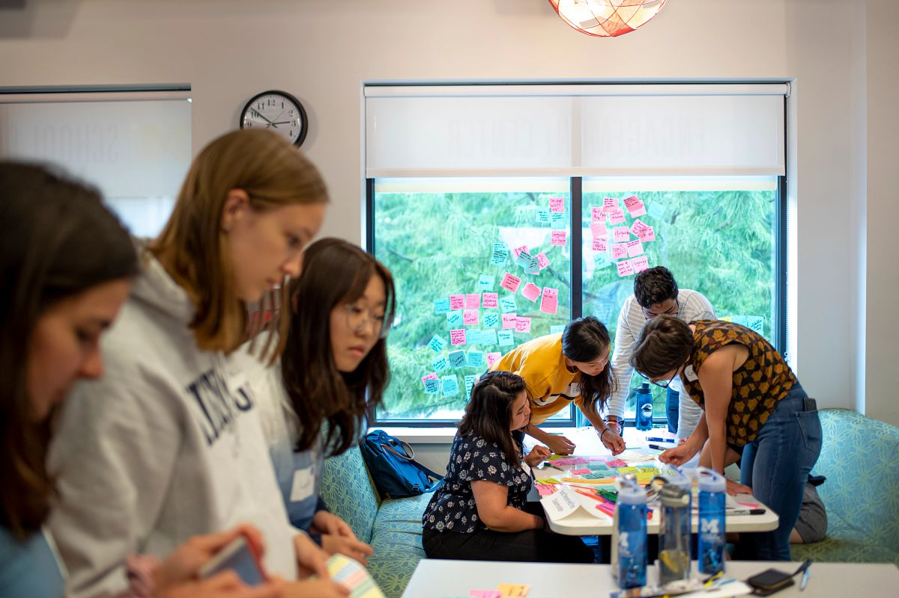

Welcome to the UM CEW+!
At CEW+, we navigate circumstantial barriers by providing academic, financial, and professional support to help you reach your personal potential. Established to support women through higher education, we lift up women and all underserved communities at U-M and beyond. Through career and education counseling, funding, workshops, events, and a diverse, welcoming community, we exist to empower. We are CEW+, and we’re here to help you reach your potential.
Events & Workshops
- VIRTUAL | CEW+Inspire Midweek Mindfulness Guided Sit, August 28
- CO-SPONSORED EVENT | Pride Outside: LGBTQIA2S+ Welcome
- VIRTUAL | CEW+Inspire Midweek Mindfulness Guided Sit, September 4
Advocacy Initiatives
Through a variety of initiatives, groups, and lecture series, we lift up and make space for diverse voices.
